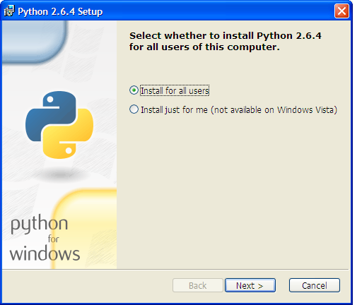
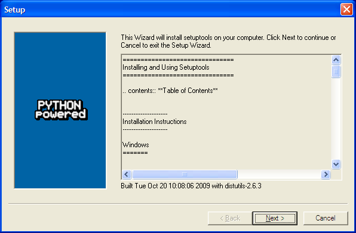
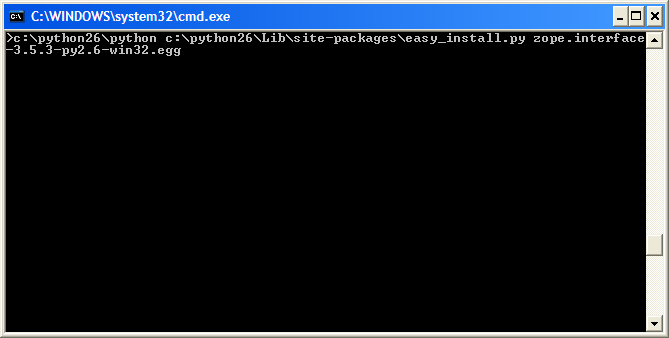
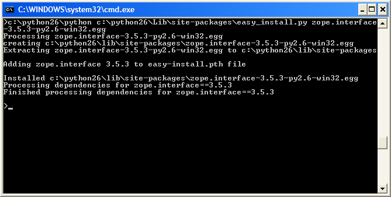
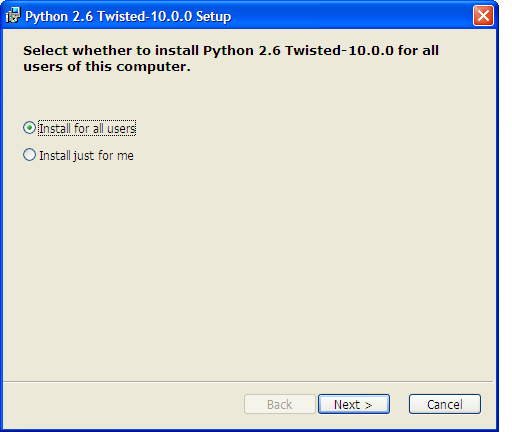

MBLogic
for an open world in automation
MBLogic
for an open world in automation
Help - Installing Third Party Support Software
Overview:
The system is built on a number of third party packages which must be installed separately before the system will function. These third party packages are:
- Python - Run time language support for the Python programming language.
- Twisted - Networking library.
Several additional packages are required for MS Windows (these are not required for Linux).
- pywin32 - Additional Python library (required for MS Windows only).
- setuptools - Additional library required to install "egg" format libraries (required for additional libraries).
- zope.interface - An additional library required for Twisted (for Twisted versions 10.0.0 or later).
All required third party support packages are free and can be obtained from normal secure internet sites (see below).
The system has been tested with Python version 2.6. Other versions may work but have not been tested. However, version 2.6 is the recommended version. The version of Twisted installed must be compatible with the version of Python used. If you are using Linux, the version compatibility will be taken care of automatically. If you are using MS Windows, the Twisted web site will indicate which version of Twisted you need for which version of Python.
Obtaining and Installing Third Party Software:
The required third party software can be obtained from the following locations.
For Linux:
For Linux, all required packages can normally be obtained from your distro's package repository. Use your package manager (e.g. Synaptic) to download the packages. Some packages (e.g. Python) may already be installed as part of the standard OS distribution.
Install the following in the order listed:
- Python - Version 2.6.
- Twisted. The Debian package name is "python-twisted". You will need python-twisted, python-twisted-core, python-twisted-web (not web2), and any dependencies (your package manager should be able to figure the dependencies out by itself).
For MS Windows:
Installing software on MS Windows is traditionally more difficult that with Linux, as MS Windows has no package management or repository system. This means that each package must be downloaded and installed separately. However, this is relatively straight forward if you follow the steps below.
The packages can be obtained from the following locations (don't install them just yet though):
- Python - http://Python.org
- pywin32 - http://sourceforge.net/projects/pywin32/
- Twisted - http://twistedmatrix.com/trac/
- SetupTools - http://pypi.python.org/pypi/setuptools
- Zope Interface - http://pypi.python.org/pypi/zope.interface
Once you have obtained all the software, install it in the following order:
- Python. Make a note of where you installed this, as the
other packages will need to find it. (Note, the actual install screen will
look slightly different from the one shown below. This screen shot was taken
after the install was run once already). Run the installer and follow
the instructions in the install menus.

- pywin32. Run the installer and follow the instructions
in the install menus.

- SetupTools. Run the installer and follow the instructions
in the install menus. This is required only for installing Zope Interface. If
Zope Interface is already installed (or you do not require it because you are
installing an older version of Twisted), you can skip this step.

- Zope Interface. This is required for versions of
Twisted from 10.0.0 or later. Earlier versions of Twisted package Zope Interface
in the Twisted package and do not require Zope Interface to be installed
separately. Zope Interface must be installed using the command
line. Move the Zope Interface "egg" package to a working directory and open
a command line window in the resulting directory.
Type
"c:\python26\python c:\python26\Lib\site-packages\easy_install.py zope.interface-3.5.3-py2.6-win32.egg"
(without the quotes).
If you are using a different version of the Zope Interface, the file name
"zope.interface-3.5.3-py2.6-win32.egg" may be slightly different.
If you have installed Python in a different location, or
if you have installed a different version, you will have to alter the
"c:\python26" part of the command accordingly.
(e.g. "c:\python25\python etc." if you are using Python 2.5).

You should see something like the following as a result. You may see some "deprecation warnings", depending on what version you install. These are not serious and are simply warning of new features or features that will be changed in an upcoming version.
- Twisted. Run the installer and follow the instructions
in the install menus.

MS Windows DLL Files:
Some copies of MS-Windows may have one or more "dll" files missing which prevent the program from operating correctly. This can happen when dll files are unintentionally removed when uninstalling software or making other changes. One dll in particular to check is "mfc71.dll". This is a standard MS Windows library which is used by many programs. This should be in the "c:\windows\system32" directory. If it is missing, you will need to reinstall it. A search on Google will turn up many solutions for this problem (this is a common problem). This file is not necessary for Linux.
Installing on Mac OS/X:
There is no documentation for installing on Mac OS/X. However, newer versions of OS/X may come with Python and Twisted already installed.
Testing Third Party Software:
To test if the third party software installation is working, you can do the following (you can skip this step if you wish).
For Linux:
For Linux, open a command line terminal and type "python". You should see the Python interpreter start up with something like the following:
Python 2.6.2 (release26-maint, Apr 19 2009, 01:58:18) [GCC 4.3.3] on linux2 Type "help", "copyright", "credits" or "license" for more information. >>>
To test if twisted is installed, type the following into the Python interpreter:
import twisted
If it is already installed, the Python command problem will appear after a brief delay. If it is not already installed, you should get an error which looks something like the following:
Traceback (most recent call last): File "<stdin>", line 1, in <module> ImportError: No module named twisted >>>
You should get a result similar to that described for twisted.
To exit Python, press "control-D" (press the control and "d" keys simultaneously). To close the terminal, press "control-D" again.
For MS Windows:
For MS-Windows, following the instructions given above for Linux, with the following exceptions.
When starting Python, you will need to include the full path name to the Python interpreter. For example: "C:\Python26\python"
Test if twisted is installed correctly by using the following commands:
import twisted.internet
This checks the pywin32 installation as well as twisted.
To exit Python, press "control-Z" (press the control and "z" keys simultaneously).
SimpleJSON
Older versions offered the option of using an improved JSON library called "simplejson". This is no longer used as Python 2.6 has JSON support built directly into its standard library.
If you are using an older version of Python, the system will automatically import a bundled version of "simplejson" but without the performance optimisations of the 'C' version. However, this will make little measureable difference in normal applications.